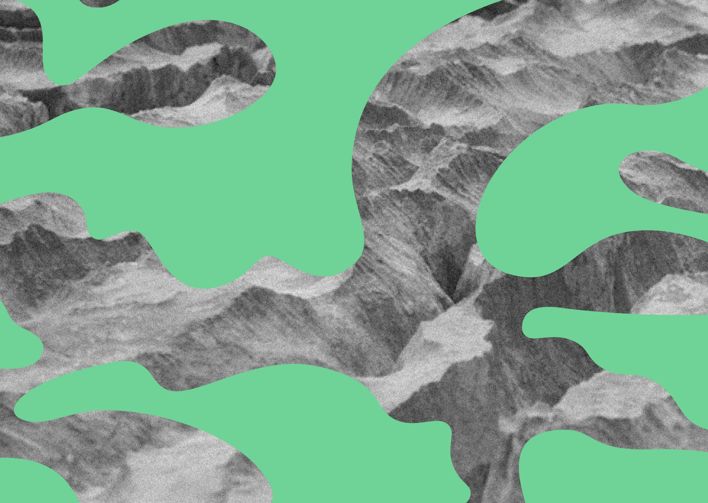
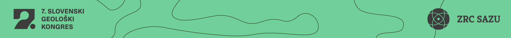

Uvod
Kongres bo ob izmenjavi novih raziskovalnih rezultatov posvečen pomenu geoznanosti za širšo družbo in njen razvoj. Omogočal bo dialog med raziskovalci, ki delujejo na znanstveno-raziskovalnih področjih geologije, in strokovnjaki, ki strokovna znanja uporabljajo pri aplikativnem delu ali pa so končni uporabniki rezultatov geoloških raziskav. Ta dialog je nujen pogoj za razvoj obeh sfer in posledično za razvoj informirane, na znanju temelječe družbe, družbe 5.0.
Cilj kongresa je tudi povečati prepoznavnost geologije kot temeljne naravoslovne znanosti, ki daje osnove za dejavnosti, povezane z upravljanjem, nadzorovanjem in načrtovanjem sonaravnega razvoja oziroma prehoda v krožno gospodarstvo, med katere sodijo tudi načrtovanje sonaravne rabe mineralnih surovin, podzemne vode in energetskih virov, premišljeno načrtovanje infrastrukturnih objektov, ocenjevanje vplivov na okolje zaradi najrazličnejših posegov v prostor, ocenjevanje geološko pogojenih nevarnosti in ocenjevanje geotermalnega potenciala za načrtovanje rabe geotermalne energije.
Za uresničitev zadanih ciljev na kongres vabimo domače in tuje raziskovalce, strokovnjake v vseh vejah geoznanosti in geotehnologe, uporabnike ter študente, na dogodke, ki jih bomo v Velenju organizirali ob kongresu, pa tudi širšo javnost.
Vabimo vas, da obiščete spletno stran www.geo-zs.si/5SGK s predstavitvijo seznama tematik 5. slovenskega geološkega kongresa in seznamov članov organizacijskega in znanstvenega odbora kongresa.
Pomembnejši datumi
- 20. 3. 2018: 2. okrožnica
- 3. 5. 2018: prijava (z oddajo prispevka in izbrano ekskurzijo)
- 15. 5. 2018: prijava na fotografski natečaj
- 3. 6. 2018: obvestilo avtorjem
- 15. 6. 2018: plačilo kotizacije
- 1. 9. 2018: rok za rezervacije namestitev po znižanih cenah
- 3. 10. 2018: začetek kongresa
Pomembne informacije
www.hotelpaka.com
Kotizacija
| Kategorija | Cena (€) z DDV | Opomba |
|---|---|---|
| Redna | 300,00 | |
| Redna brez kongresne ekskurzije | 250,00 | |
| Za člane SGD* | 270,00 | *Če so plačali članarino za leto 2018. |
| Za člane SGD* brez kongresne ekskurzije | 220,00 | *Če so plačali članarino za leto 2018. |
| Za študente** | 120,00 | **Študentje 1. in 2. stopnje ob priložitvi dokazila o statusu. |
| Za študente** brez kongresne ekskurzije | 100,00 | **Študentje 1. in 2. stopnje ob priložitvi dokazila o statusu. |
| Za študente**, ki so člani SGD* | 110,00 | **Študentje 1. in 2. stopnje ob priložitvi dokazila o statusu. |
| Za študente**, ki so člani SGD* brez kongresne ekskurzije | 90,00 | |
| Naknadna prijava na kongresno ekskurzijo | 60,00 |
Kotizacija vključuje
- zabavo dobrodošlice,
- kongresni paket s tiskanim zbornikom,
- okrepčila med odmori,
- kosilo prvi in drugi dan kongresa,
- zaključno večerjo drugi dan kongresa,
- kongresno ekskurzijo v petek.
Stroški namestitve niso vključeni v kotizacijo.
Okvirni program kongresa
- Ponedeljek, 1. 10. 2018: Predkongresni program – Mineralne surovine v vsakdanjem življenju. Dopoldan: delavnice in ogled Muzeja premogovništva Slovenije za učence osnovnih in srednjih šol (Galerija Velenje ali Muzej premogovništva Slovenije). Popoldan: ogled Velenjskih jezer in razstave na Velenjskem gradu.
- Torek, 2. 10. 2018: Predkongresni program – Dan geologije. Dopoldan: geološke delavnice za osnovne in srednje šole (Galerija Velenje ali VŠVO). Popoldan: predavanje za širšo javnost (Velenjski grad), GeoTEK (družabni, rekreativni tek za udeležence kongresa in druge tekače/sprehajalce) okrog jezer. Zvečer: zabava dobrodošlice in možnost registracije.
- Sreda, 3. 10. 2018: 1. dan kongresa. Zjutraj registracija (Hotel Paka). Dopoldan otvoritev kongresa in plenarna predavanja (Hotel Paka, Velika dvorana). Popoldan predavanja v sekcijah in poster sekcija. Zvečer geološki fotonatečaj – otvoritev razstave (Galerija na prostem) in predavanje za širšo javnost (Kulturni dom).
- Četrtek, 3. 10. 2018: 2. dan kongresa. Zjutraj plenarna predavanja in predavanja v sekcijah. Dopoldan okrogla miza »Je Slovenija pripravljena urediti področje uporabnosti in uporabe geoloških podatkov« ter tiskovna konferenca. Popoldan predavanja v sekcijah in poster sekcija, skupščina Slovenskega geološkega društva ter sestanek Komisije za mineralne in termalne vode mednarodnega društva hidrogeologov (IAH-CMTW). Zvečer zaključna slovesnost in kongresna večerja (Restavracija Jezero).
Kongresne ekskurzije
E-1: Velenjski lignit – geološka edinstvenost in njegova vloga v energetiki Slovenije
Vodje: Marjan Lenart, Miloš Markič, osebje obiskanih inštitucij.
Ekskurzija je namenjena predstavitvi Premogovnika Velenje, njegovih geoloških značilnosti, vloge v slovenskem energetskem sistemu in vplivov na okolje in prostor. Vključevala bo možnost ogleda Premogovnika Velenje (PV), Muzeja premogovništva, Termoelektrarne Šoštanj (TEŠ) in območij z vidnimi posledicami rudarjenja na površini ter ponovno kultiviranih območij.
Po predstavitvi Premogovnika Velenje kot podjetja in kot ležišča enega debelejših slojev premoga na svetu imajo udeleženci možnost izbrati eno od variant:
- E-1a: obisk premogovnika – Jame Pesje z ogledom pridobivanja premoga in izdelave jamskih prog.
- E-1b: Termoelektrarna Šoštanj (TEŠ) s predstavitvijo podjetja in ogledom termoenergetskih objektov.
- E-1c: Muzej premogovništva Slovenije, ki predstavlja avtentično okolje velenjskega rudarjenja okoli 200 m pod površino.
Skupini E-1b (TEŠ) in E-1c (Muzej) si bosta nato skupaj ogledali območja sanacije površine (posledice odkopavanja, uporaba pepela iz TEŠ, nove dejavnosti na že saniranih in ponovno kultiviranih površinah). Zaradi omejitve števila udeležencev je prijava možna do zapolnitve mest.
E-2: Načrtovanje trase 3. razvojne osi in geološko pogojeni dejavniki tveganja pri umeščanju prometnic v prostor
Vodje: Andrej Ločniškar, Andrej Jan, Dušan Ogrizek, Ana Petkovšek, Barbara Čenčur Curk, Blaž Črepinšek.
Inženirsko- in hidrogeološka ekskurzija bo potekala po trasi načrtovanega odseka 3. razvojne osi (RO) sever, na odseku od priključka Velenje jug do Šentruperta. Na izbranih mestih si bomo ogledali IG zahtevne odseke trase in vplive geoloških razmer na izbiro zavarovalnih ukrepov v globokih vkopih v mehkih sivici in tufu in trdnih karbonatnih kamninah. Obravnavani bodo vplivi gradnje na podzemno vodo in vire pitne vode in vplivi le-te na zasnove gradnje, saj trasa poteka po medzrnskem vodonosniku Spodnje Savinjske doline in razpoklinskem vodonosniku gore Oljka.
V Celju si bomo ogledali degradirana tla na območju stare cinkarne ter najvišjo nasuto zemeljsko pregrado v Sloveniji, Za Travnikom v Celju. Poudarek ogleda bo na pomenu tehničnega opazovanja za varnost in stroške vzdrževanja pregrade.
Po kosilu v Celju bomo nadaljevali pot mimo Velike Pirešice v Velenje in si ogledali IG zahtevne odseke in idejne rešitve gradnje trase 3. RO na odseku Slovenj Gradec - Velenje.
E-3: Geološki razvoj kenozojskih sedimentacijskih bazenov v širši okolici Velenja
Vodje: Polona Kralj, Marko Vrabec, Kristina Ivančič, Mirka Trajanova, Eva Mencin Gale.
Stratigrafsko-sedimentološka ekskurzija bo potekala na območju oligocenskega smrekovškega bazena, preko Periadriatske prelomne cone do slovenjgraškega miocenskega bazena in velenjskega pliokvartarnega bazena.
V Ljubijskem grabnu si bomo ogledali debelo zaporedje piroklastičnih in avtoklastičnih andezitno-dacitnih kamnin smrekovškega vulkanskega kompleksa, ki so v neposrednem tektonskem kontaktu s triasnimi karbonatnimi kamninami. Pot bo vodila preko Gaberk do Periadriatskega prelomnega sistema, ob katerem so razgaljene granitoidne magmatske kamnine (na izdanku tonalit), ki predstavlja mejno cono med Južnimi in Vzhodnimi Alpami. Nato si bomo ogledali spodnjebadenijske klastične sedimentne kamnine, ki so nastajale v različnih okoljih na obrobju Panonskega bazena. Ekskurzijo bomo zaključili nekoliko južneje od Gaberk z ogledom pliokvartarnih sedimentov, ki so se odlagali v rečnih okoljih.
Pokongresna ekskurzija
Termin: sobota - ponedeljek, 6. - 8. 10. 2018
Vodje: Nina Rman, Mihael Brenčič, Tamara Marković
IAH CMTW ekskurzija: Geologija, hidrogeologija in geotermija SV Slovenije in S Hrvaške
- Sobota, 6.10.2018: vožnja iz Velenja z razlago geologije in hidrogeologije SV Slovenije. Ogled Ivanjševske slatine in mofete Strmec. Obisk polnilnice naravne mineralne vode Radenska d.d. Ogled rastlinjaka in/ali geotermalnega dubleta v Lendavi. Turistični ogled stolpa Vinarium z degustacijo vin. Nastanitev in kopanje v Termah Lendava.
- Nedelja, 7.10.2018: vožnja na Hrvaško do Peklenice. Predstavitev pridobivanja nafte in zemeljskega plina. Ogled geotermalne elektrarne v Veliki Cigleni. Odhod v Krapinske Toplice z ogledom kaskadne rabe termalne vode v Aquae vivae. Spanje in večerja.
- Ponedeljek, 8.10.2018: geologija Hrvaškega Zagorja in ogled termalnih izvirov v zdravilišču Stubičke Toplice. Ogled muzeja Krapinskega pračloveka. Ogled miocenskih in triasnih kamnin na poti nazaj v Slovenijo ter postanek v Rogaški Slatini pri vrelcih naravne mineralne vode. Vrnitev v Velenje.
Vključeno v ceno: avtobusni prevoz, 2 nastanitvi z zajtrkom, 3 kosila, 2 večerji, vse vstopnine za oglede.